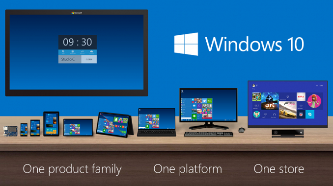
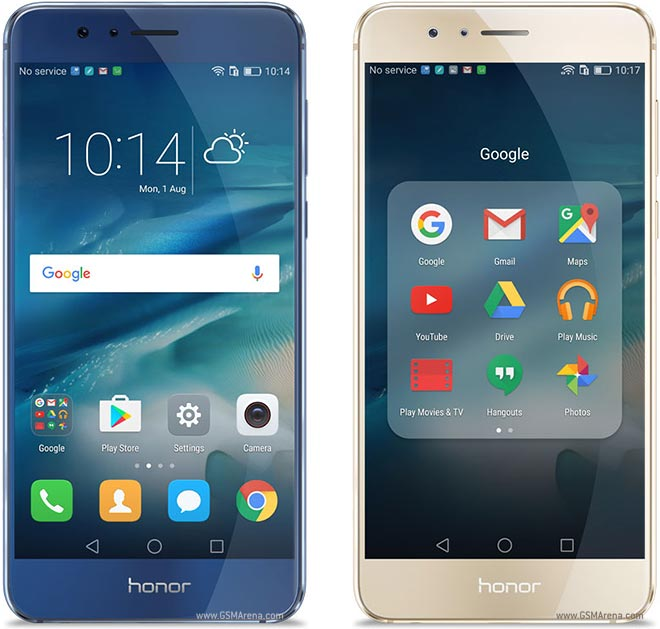
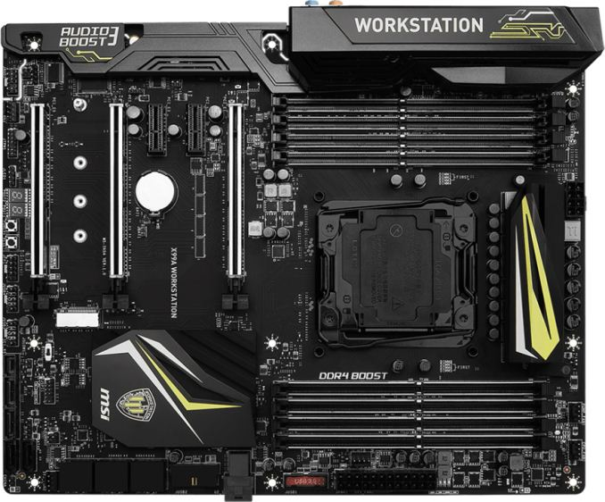

- HOME
- ABOUT
- SERVICE
- CONTACT
Microsoft and Qualcomm Collaborate to Bring Windows 10 and x86 Emulation to Snapdragon Processors
Today at Microsoft’s WinHEC event in Shenzhen, China, the company announced that it’s working with Qualcomm to bring the full Windows 10 experience to future devices powered by Snapdragon processors. Terry Myerson, executive vice president of the Windows and Devices Group at Microsoft, is “excited to bring Windows 10 to the ARM ecosystem” and looks forward to bringing “Windows 10 to life with a range of thin, light, power-efficient and always-connected devices,” which may include anything from smartphones to tablets to ultraportable laptops to servers.
Honor8 Review
Huawei’s smartphone branding strategy seems similar to many car companies. Toyota, for example, has the Lexus marque for high-end, luxury vehicles and the Scion marque that develops sporty, lower-cost vehicles with customization options targeted at millennials. Vehicles that carry the Toyota brand target mainstream consumers, covering a broad swath of the market with many different products. Huawei’s Mate and P-series phones are analogous to Toyota’s Lexus brand, catering to the high-end of the market with premium performance and features, with the P-series specifically focusing on design and photography. In addition to its many other phones with varying features and price points, Huawei’s Honor brand parallels Toyota’s Scion, focusing on always-connected millennials.
MSI Motherboard Review
Last week MSI introduced its new X99A Workstation motherboard, part of the X99 refresh we've seen over the past couple of months following the launch of the Broadwell-E processor line. Despite the name 'workstation', this board is based on the consumer-grade Intel X99 PCH rather than the server oriented parts, and as a result it supports overclocking. Part of the 'Workstation' feature set means that it has qualified support for NVIDIA Quadro PCIe cards, compatibility with ECC memory, and a U.2 connector for storage. The manufacturer claims that the mainboard uses special components that can improve the endurance of the board, although the warranty is still listed as three years.